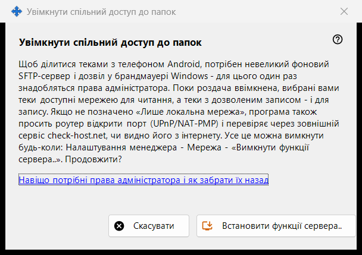
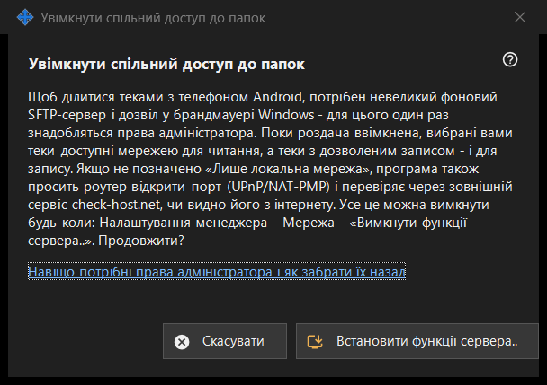

Увімкнути спільний доступ до папок
Призначення
Просить дозволу встановити серверну частину спільного доступу: невеликий фоновий SFTP-сервер і один виняток брандмауера Windows. Відкривається кнопкою «Увімкнути функції сервера..» головного вікна та з майстрів, і один раз потребує прав адміністратора.


Порядок дій
- Прочитайте пояснення.
- Натисніть «Встановити функції сервера..».
- Підтвердьте запит прав адміністратора Windows.
- Дочекайтеся рядка з результатом; у разі успіху вікно повідомляє, що спільний доступ до папок увімкнено.
- Натисніть «Скасувати», щоб вийти без змін.
Елементи вікна
Що це робить
Щоб ділитися папками з телефоном Android, потрібні невеликий фоновий SFTP-сервер і дозвіл брандмауера Windows. Поки роздачу ввімкнено, вибрані папки можна читати через мережу, а ті, що відкриті для запису, - ще й записувати. Якщо не позначено параметр лише локальної мережі, програма також просить роутер відкрити порт (UPnP/NAT-PMP) і перевіряє адресу через зовнішню службу.
Результати
«Готово. Спільний доступ увімкнено.»; «Спільний доступ не ввімкнено - не отримано прав адміністратора.», коли запит відхилено (нічого не змінюється, можна повторити); або збій брандмауера, після якого пропонується спробувати ще раз і надіслати журнал: Налаштування менеджера - Довідка - «Експорт журналів для аналізу».
Права адміністратора і як їх забрати
Посилання пояснює, для чого використовуються ці права. Щоб скасувати їх, скористайтеся пунктом «Вимкнути функції сервера..» в налаштуваннях менеджера: роздача зупиняється, підключені телефони від'єднуються, а дозвіл брандмауера видаляється. Список папок і пароль зберігаються, і все можна знову ввімкнути.
Налаштування менеджера · Налаштування спільного доступу SFTP · Налаштування сервера обміну